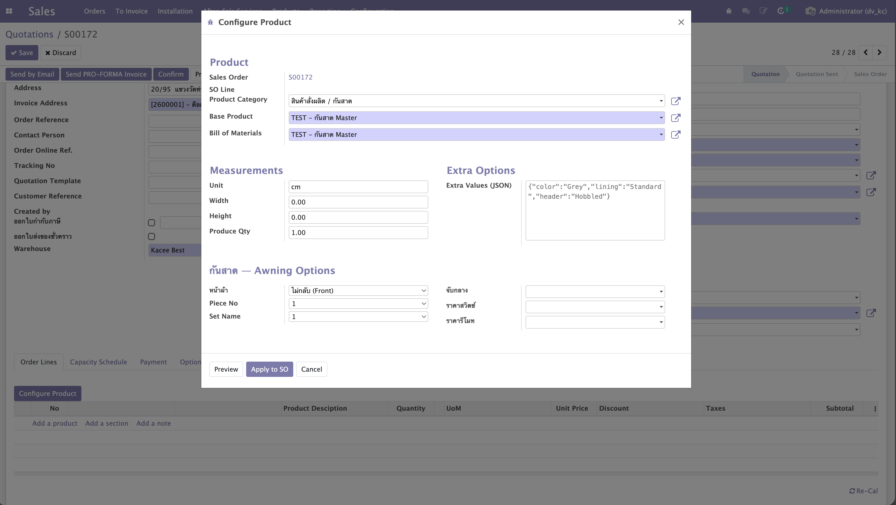
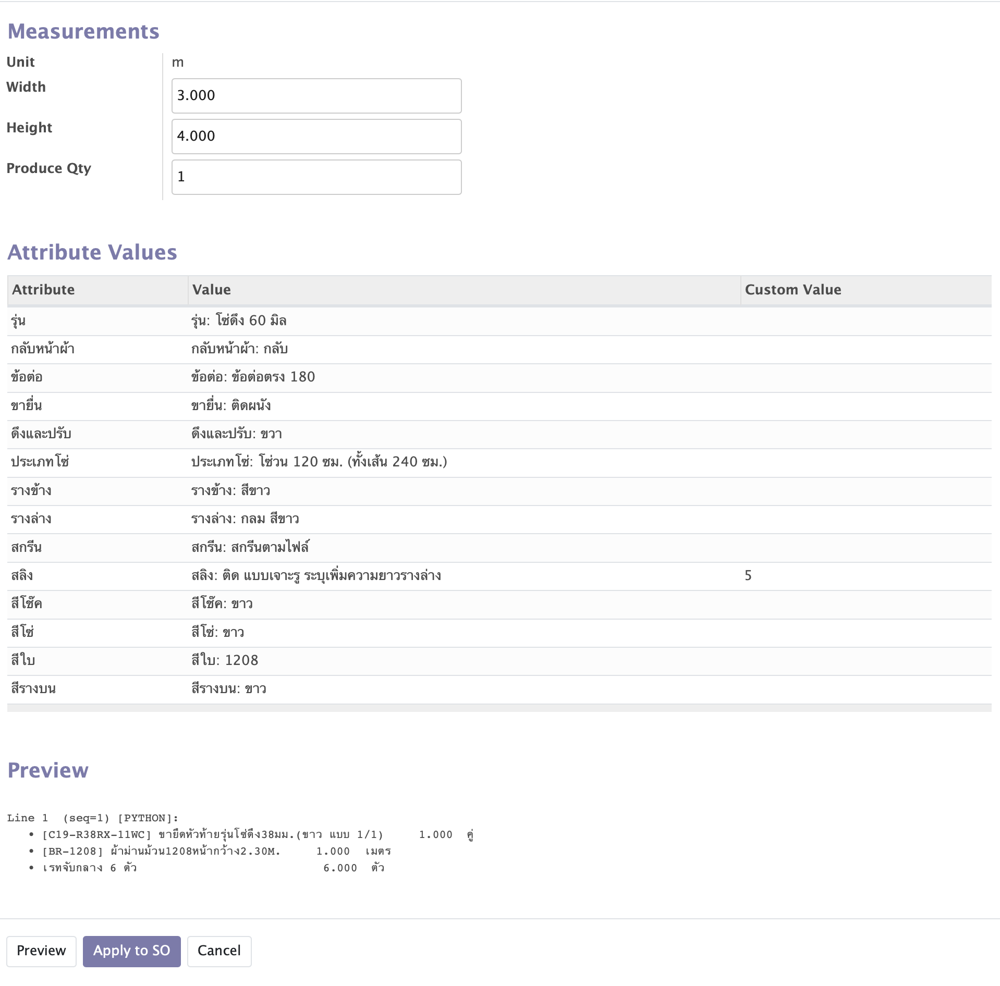
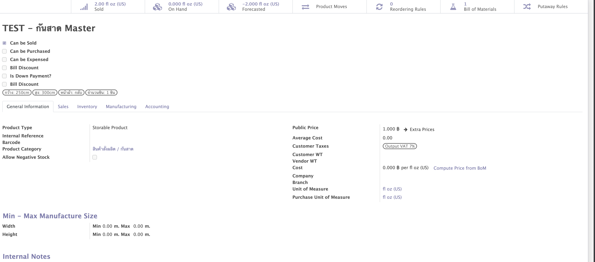
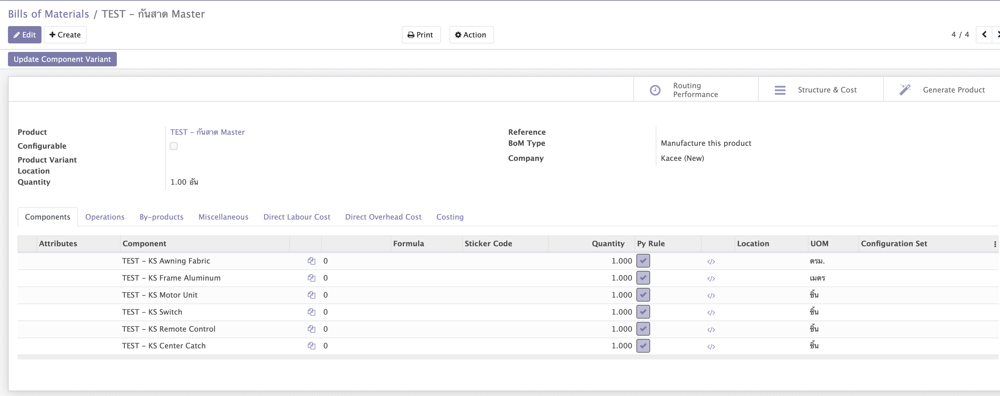
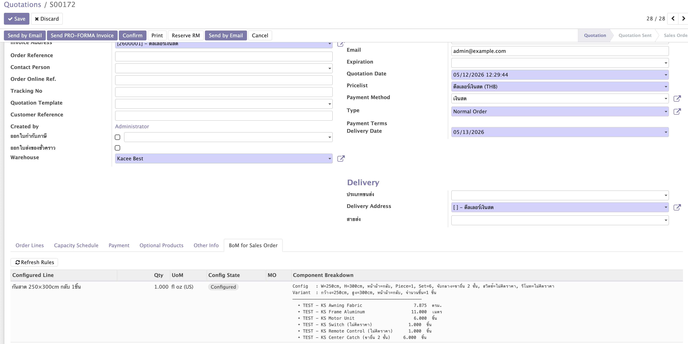
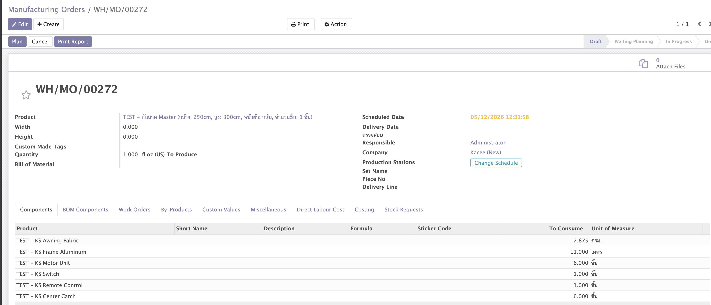

Dynamic BoM
Sale Configurator
Python rules on BoM lines compute components from wizard inputs. Variant and Manufacturing Order are created only at SO confirmation — zero pre-created combinatorial variants.
Overview
Replaces the default Odoo product configurator for products that have a BS Dynamic BoM. Users configure dimensions and options; rules compute components; variant + MO are created only at SO confirmation.
action_bs_config_start() detects a BS BoM and opens bs.sale.config.wizard.Apply → stores config JSON on SO line; no variant or MO yet. Gear icon appears for re-configuration.
bs_is_configured line: re-evaluates rules → finds or creates product.product → creates mrp.production → sets line.product_id = real variant.The button calls action_bs_config_start — a unique method name. The OCA module product_configurator_sale overrides action_config_start without calling super(). If still installed in the DB, it would silently swallow the standard override. The unique name bypasses this entirely.
Adds conditional attribute rules to the wizard: auto-fill, value filtering, and blacklisting based on trigger attribute values. See §12 for full documentation.


Interactive Preview Simulator
Change dimensions and options to see component quantities recalculate live. Click Apply to SO to see the Configured state.
Quantities use JavaScript translations of the Master Rule from §5.11. Width and height are entered in metres (v1.6.2+). Stock-length ceiling formulas convert to cm internally.
Product Template Setup
2.1 Required Settings
| Field | Value |
|---|---|
| Product Type | Storable or Consumable |
| Can be Sold | checked |
| Can be Manufactured | checked |
| Can be Configured | checked (config_ok = True) |
| Routes | Manufacture |
Can be Configured is set automatically when the user first clicks Apply to SO. You do not need to tick it manually.
2.2 Variants Tab — Attributes
Add the attributes that your BoM rules will reference. All attributes must be pre-defined here — neither the wizard nor BoM Python rules are allowed to create attributes or attribute values automatically.
Each attribute must not be set to Never (no variant). Both Dynamic and Instantly modes work — _bs_find_or_create_variant looks up the existing PTAV combination regardless of how Odoo created it. Only no_variant is rejected because it cannot participate in a variant combination key.
_bs_find_or_create_variant never creates attributes or attribute values. It raises immediately if either is missing or misconfigured:
| Situation | Error type | Action button |
|---|---|---|
| Attribute name not found | RedirectWarning | "Go to Attributes" → opens attribute list |
Attribute found, Variants = Never (no_variant) | RedirectWarning | "Open Attribute" → opens that attribute's form |
| Attribute value not on this template | UserError | Lists available values for that attribute |
Creating product.product variants (the combination record) is still allowed — only product.attribute and product.attribute.value creation is blocked.
Example — ม่านม้วน (Roller Blind):
| Attribute | Example values |
|---|---|
| กลับหน้าผ้า | กลับ, ไม่เอา |
| สีใบ | R557-1, C26229, … |
| ดึงและปรับ | ขวา, ซ้าย |
| สีรางบน | ขาว, ดำ, น้ำตาล, เทา |
| ประเภทโซ่ | (chain type values…) |
| สีโซ่ | ขาว, ดำ, นิกเกิ้ล, น้ำตาล, สแตนเลส, เทา |


2.3 Migrate an Existing Product (Old Configurator → BS Wizard)
# 1. Remove old product.config.session records
sessions = env['product.config.session'].sudo().search([('product_tmpl_id', '=', tmpl.id)])
sessions.sudo().unlink()
# 2. Archive all existing variants
variants = tmpl.with_context(active_test=False).product_variant_ids
variants.sudo().write({'active': False})
# 3. SQL-delete FK children first, then PTALs
env.cr.execute("""
DELETE FROM product_variant_combination
WHERE product_template_attribute_value_id IN (
SELECT ptav.id FROM product_template_attribute_value ptav
JOIN product_template_attribute_line ptal ON ptal.id = ptav.attribute_line_id
WHERE ptal.product_tmpl_id = %s
)
""", (tmpl.id,))
env.cr.execute(
"DELETE FROM product_template_attribute_line WHERE product_tmpl_id = %s", (tmpl.id,)
)
# 4. Flush ORM cache after raw SQL
env.cache.invalidate()
# 5. Add new attributes / values and write to template
# 6. Activate and enable configurator
tmpl.sudo().write({'config_ok': True, 'active': True})
env.cr.commit()Delete product_variant_combination before product_template_attribute_line. Call env.cache.invalidate() after every raw SQL block to avoid stale-cache UniqueViolation errors.
Bill of Materials Setup
Each BoM line runs one Python rule in sequence order. Later rules can read prev_result from the preceding rule.
- Go to Manufacturing → Products → Bills of Materials
- Create BoM: Product = template, BoM Type = Manufacture, Quantity = 1
- Add component lines — one per logical component group
- For each dynamic line: set placeholder Component, tick Use Python Rule, set UoM to match component product's UoM (critical — see §5.3), write rule in Python Rule field



Attribute Value Extension — component_id
This module adds one field to product.attribute.value. All quantity calculation logic lives in the BoM Python rules themselves — not on the PAV record. This keeps the UI simple and all business logic visible in one place.
4.1 Extension Field on product.attribute.value
| Field | Type | Purpose |
|---|---|---|
| component_id | Many2one product.product | The component product to use when this attribute value is selected |
Set it in the Odoo UI on any attribute's Values tab. In Python rules, access it via:
pav = bom.env['product.attribute.value'].search([
('attribute_id.name', '=', attr_name),
('name', '=', val_name),
], limit=1)
component = pav.component_id # product.product recordQty formulas, stock lengths, and role logic are all written as BoM Python rules — the PAV record only stores which product to use. This way you can read the complete component calculation in one place without jumping between UI screens.
Writing BoM Python Rules
Rules run inside a restricted sandbox. Read values, compute quantities, assign result. ORM is accessible via bom.env.
5.1 Rule Context Variables
| Variable | Type | Description |
|---|---|---|
| values | dict | All wizard inputs: width (float), height (float), uom (str), + attribute selections — single-pick → str value name; multi-pick → list[str] of names |
| line | mrp.bom.line | Current BoM line — line.product_id, line.product_uom_id |
| bom | mrp.bom | Parent BoM — use bom.env for ORM access |
| product / base_product | product.template | Base product template |
| prev_result | list[dict] | Output of the previous BoM line (empty for line 1) |
| result | list[dict] | Assign this |
| product_name | str | Optional — overrides SO line display name + sets product_description_variants on MO |
| default_code | str | Optional — sets default_code on a newly-created variant; existing variants are never modified |
| product_attributes | dict | Removed v1.8.1 — raises UserError if set; variant identity is now wizard-only |
env is not in locals, but bom.env is available. Example: bom.env['product.attribute.value'].search([...]). import is blocked by the sandbox.
5.2 Result Dict Format
{'product_id': 148590, 'name': 'กล่องบน 38มม. ขาว', 'qty': 2, 'uom_id': line.product_uom_id.id}
# By internal reference (default_code)
{'default_code': 'B02-S-5744-10YW', 'name': '...', 'qty': 1, 'uom_id': line.product_uom_id.id}
result = [] # valid — this line produces no component5.3 UoM Rule — Critical
The uom_id in your result must be in the same UoM category as the component product's own uom_id. Best practice: set BoM line UoM to match component product, then always use line.product_uom_id.id.
n = int(width / stock)
qty = max(n + (1 if width % stock else 0), 1)5.4 Pattern — Formula Dispatcher (Line 10)
Iterates all selected attribute values and dispatches qty by attribute name. Role-based attributes (รางล่าง, รางข้าง, ขายื่น) are listed in the SKIP set and handled separately in Line 20.
# Line 10 — Formula Dispatcher
# Qty logic is hardcoded per attribute name; only pav.component_id is used from PAV.
# Role-based attrs (รางล่าง, รางข้าง, ขายื่น) are handled in Line 20.
SKIP = {'width', 'height', 'uom', 'produce_qty',
'รางล่าง', 'รางข้าง', 'ขายื่น'}
w = values.get('width', 0.0)
h = values.get('height', 0.0)
PAV = bom.env['product.attribute.value']
result = []
for attr_name, val_name in values.items():
if attr_name in SKIP or not val_name or not isinstance(val_name, str):
continue
pav = PAV.search([
('attribute_id.name', '=', attr_name),
('name', '=', val_name),
], limit=1)
if not pav or not pav.component_id:
continue
if attr_name == 'สีใบ':
# fabric: metres = height / 100
qty = round(h / 100.0, 3)
elif attr_name == 'สีรางบน':
# top box rail: ceil(width / 580cm stock)
stock = 580.0
n = int(w / stock)
qty = float(max(n + (1 if w % stock else 0), 1))
elif attr_name == 'ประเภทโซ่':
# loop chain: total length encoded in name "(ทั้งเส้น Y ซม.)" → Y/100 m
# extension chain: name starts with "โซ่ต่อ" → (2H + 50) / 100 m
if '(ทั้งเส้น' in val_name:
try:
total_cm = float(val_name.split('(ทั้งเส้น')[1].split('ซม.)')[0].strip())
qty = round(total_cm / 100.0, 3)
except Exception:
qty = 0.0
elif 'โซ่ต่อ' in val_name:
qty = round((h * 2.0 + 50.0) / 100.0, 3)
else:
qty = 0.0
else:
# ข้อต่อ, สลิง, etc.: fixed qty = 1
qty = 1.0
if qty > 0:
result.append({
'product_id': pav.component_id.id,
'name': pav.component_id.display_name,
'qty': qty,
})"โซ่วน 150 ซม. (ทั้งเส้น 300 ซม.)" — the total length in cm is always inside (ทั้งเส้น ... ซม.). Parsing it means no numeric data needs to be stored on the PAV record.
5.5 Pattern — Role-Based Dispatcher (Line 20)
Handles attributes that require dimensional context or a multiplier. The set of role-based attribute names is declared at the top — identified by attr_name, not by any PAV field.
# Line 20 — Role-Based Dispatcher
# Handles attrs requiring dimensional logic; identified by attr_name, not PAV field.
# รางล่าง stock: B02-S-5776-* = 600cm, B02-S-5824-* = 580cm.
# รางข้าง: 2 × ceil(height / 597cm) — ×2 multiplier is why this line exists.
ROLE_ATTRS = {'รางล่าง', 'รางข้าง', 'ขายื่น'}
w = values.get('width', 0.0)
h = values.get('height', 0.0)
PAV = bom.env['product.attribute.value']
result = []
already_ids = {item.get('product_id') for item in prev_result}
def ceil_div(length, stock):
stock = stock if stock > 0 else 1.0
n = int(length / stock)
return max(n + (1 if length % stock else 0), 1)
for attr_name, val_name in values.items():
if attr_name not in ROLE_ATTRS or not val_name or not isinstance(val_name, str):
continue
pav = PAV.search([
('attribute_id.name', '=', attr_name),
('name', '=', val_name),
], limit=1)
if not pav or not pav.component_id:
continue
comp = pav.component_id
comp_id = comp.id
code = comp.default_code or ''
if attr_name == 'ขายื่น':
qty = 1.0
elif attr_name == 'รางล่าง':
# stock length varies by product code series
stock = 580.0 if '5824' in code else 600.0
qty = float(ceil_div(w, stock))
elif attr_name == 'รางข้าง':
# 2 vertical channels (left + right), each cut to height
qty = float(2 * ceil_div(h, 597.0))
else:
qty = 1.0
if qty > 0 and comp_id not in already_ids:
result.append({'product_id': comp_id, 'name': comp.display_name, 'qty': qty})
already_ids.add(comp_id)already_ids prevents the same component appearing twice when multiple PAV values resolve to the same product (e.g. two color options sharing one component).
5.6 Pattern — Combination Rule (PAV ID matching)
When a specific combination of two attribute values produces a unique component, reference both PAVs by integer ID. IDs survive value renames; name strings do not.
# Find IDs once in shell:
# env['product.attribute.value'].search([('attribute_id.name','=','สีใบ'),('name','=','18180-3')]).id # → 7533
# env['product.attribute.value'].search([('attribute_id.name','=','สีโช๊ค'),('name','=','teak')]).id # → 4365
PAV_SII_BAI_18180_3 = 7533
PAV_SII_CHOK_TEAK = 4365
COMBO_PRODUCT_ID = 163203 # product.product variant ID
PAV = bom.env['product.attribute.value']
sii_bai_name = values.get('สีใบ', '')
sii_chok_name = values.get('สีโช๊ค', '')
sii_bai_id = None
sii_chok_id = None
if sii_bai_name and isinstance(sii_bai_name, str):
_pav = PAV.search([('attribute_id.name', '=', 'สีใบ'), ('name', '=', sii_bai_name)], limit=1)
sii_bai_id = _pav.id if _pav else None
if sii_chok_name and isinstance(sii_chok_name, str):
_pav = PAV.search([('attribute_id.name', '=', 'สีโช๊ค'), ('name', '=', sii_chok_name)], limit=1)
sii_chok_id = _pav.id if _pav else None
if sii_bai_id == PAV_SII_BAI_18180_3 and sii_chok_id == PAV_SII_CHOK_TEAK:
combo = bom.env['product.product'].browse(COMBO_PRODUCT_ID)
result = [{'product_id': COMBO_PRODUCT_ID, 'name': combo.display_name, 'qty': 1.0}]
else:
result = []Python's exec(code, {}, locals_dict) does not create a proper closure scope. Any def helper() inside the rule cannot reliably read outer exec locals (values, PAV, etc.). Always use flat inline code with _pav as a temporary variable name per lookup.
5.7 Pattern — Product Name Builder (Line 30)
Produces no components (result = []). Sets product_name to build a human-readable MO label. Since v1.8.1, variant identity is wizard-only — product_attributes is forbidden in rules.
# Line 30 — Product Name Builder
w = int(values.get('width', 0))
h = int(values.get('height', 0))
u = values.get('uom', 'cm')
top_color = values.get('สีรางบน', '')
chain_type = values.get('ประเภทโซ่', '')
sii_bai = values.get('สีใบ', '')
# ... read other attributes ...
# Chain label parsed from PAV name — "(ทั้งเส้น Y ซม.)" → "โซ่Yซม."
chain_label = ''
if chain_type:
if '(ทั้งเส้น' in chain_type:
try:
total_cm = float(chain_type.split('(ทั้งเส้น')[1].split('ซม.)')[0].strip())
chain_label = 'โซ่%dซม.' % int(total_cm)
except Exception:
chain_label = ''
elif 'โซ่ต่อ' in chain_type:
chain_label = 'โซ่ต่อ(%dซม.)' % int(h * 2 + 50)
parts = ['W%dxH%d%s' % (w, h, u)]
if top_color: parts.append('รางบน%s' % top_color)
if chain_label: parts.append(chain_label)
if sii_bai: parts.append(sii_bai)
product_name = base_product.name + ' ' + ' '.join(parts)
result = []When product_name is set and differs from the base product template name, it is written to product_description_variants on the Manufacturing Order — giving the MO a human-readable description (e.g. ม่านม้วน W150xH220cm ขาว) instead of the auto-generated Template (Attr1: Val1, …) label.
Assigning product_attributes in a rule raises UserError. Variant identity is now wizard-only: action_apply builds the attribute map from attr_line_ids; _bs_refresh_config builds it from bs_config_json filtered by the template's PTAL attribute names. Remove any product_attributes = {...} lines from existing rules.
5.8 Using prev_result
already_ids = {item.get('product_id') for item in prev_result}
# Only add if not already added by a previous line
if my_product_id not in already_ids:
result.append({...})5.9 Safe Builtins
int float str bool round abs min max len range list dict tuple set sorted enumerate zip isinstance type any all sum
Not available: import, open, eval, exec, os, sys. ORM via bom.env['model'].
5.11 Pattern — Master Rule (All Cases Combined)
A single BoM line handling every component requirement. Recommended for new BoMs — one rule, zero maintenance on individual lines. Width and height are always in metres.
Case 1 — Direct lookup: values[attr] → PAV → component_id.
Case 2 — Qty by attribute name (dimensional logic per attr).
Case 3 — Custom value: is_custom = True PAV fallback — user typed a free text value.
Case 4 — bom.rate table lookup (after the attr loop, unconditional).
Skeleton
result = []
PAV = bom.env['product.attribute.value']
BomRate = bom.env['bom.rate']
w_m = float(values.get('width', 0.0)) # metres
h_m = float(values.get('height', 0.0)) # metres
w_cm = w_m * 100.0 # cm — for stock-length formulas
h_cm = h_m * 100.0
SKIP = {
'width', 'height', 'uom', 'produce_qty',
}
for attr_name, val_name in values.items():
if attr_name in SKIP:
continue
if not val_name or not isinstance(val_name, str) or not val_name.strip():
continue
# Case 1 — direct PAV lookup
pav = PAV.search([
('attribute_id.name', '=', attr_name),
('name', '=', val_name),
], limit=1)
# Case 3 — custom-value fallback (is_custom PAV when text doesn't match any name)
if not pav:
pav = PAV.search([
('attribute_id.name', '=', attr_name),
('is_custom', '=', True),
], limit=1)
if not pav or not pav.component_id:
continue
prod = pav.component_id
# Case 2 — dimensional qty per attribute name
if attr_name in ('สีรางบน', 'รางล่าง'):
stock_cm = 580.0
n = int(w_cm / stock_cm)
qty = float(n + (1 if w_cm % stock_cm else 0))
qty = max(qty, 1.0)
elif attr_name == 'รางข้าง':
stock_cm = 597.0
n = int(h_cm / stock_cm)
pieces_per_side = n + (1 if h_cm % stock_cm else 0)
qty = float(max(pieces_per_side, 1) * 2)
elif attr_name == 'ขายื่น':
qty = 1.0
elif attr_name == 'ประเภทโซ่':
if pav.is_custom:
try:
qty = float(val_name)
except Exception:
qty = round((2.0 * h_cm + 50.0) / 100.0, 3)
elif '(ทั้งเส้น' in val_name and 'ซม.)' in val_name:
try:
total_cm = float(val_name.split('(ทั้งเส้น')[1].split('ซม.)')[0])
qty = round(total_cm / 100.0, 3)
except Exception:
qty = round((2.0 * h_cm + 50.0) / 100.0, 3)
elif 'ต่อ' in val_name:
qty = round((2.0 * h_cm + 50.0) / 100.0, 3)
else:
qty = 1.0
elif pav.is_custom:
# Case 3 — generic custom: parse typed text as numeric qty
try:
qty = float(val_name)
except Exception:
qty = 1.0
else:
qty = 1.0
result.append({
'product_id': prod.id,
'name': prod.display_name,
'qty': qty,
})
# Case 4 — bom.rate table lookup (unconditional, always runs)
rate = BomRate.search([
('rate_group_id', '=', 1), # เรทจับกลางตาราง 1
('compute_from', '=', 'width'),
('min', '<=', w_m),
('max', '>=', w_m),
], limit=1)
if rate:
result.append({
'default_code': 'C19-R38RX-002W', # จับกลาง — self-documenting for Test Rule check
'name': rate.name,
'qty': rate.qty,
})is_custom PAVs for รุ่นโซ่ดึง 38 มิล
| Attribute | PAV name | Component code | Custom value means |
|---|---|---|---|
| ประเภทโซ่ | โซ่ต่อ ระบุความยาว | C19-R38RL-004 | Chain length in metres |
| สลิง | ติด แบบเจาะรู ระบุเพิ่มความยาวรางล่าง | E03-0024P | Extra sling length (m) |
| สลิง | ติด แบบไม่เจาะรู ระบุเพิ่มความยาวรางล่าง | E03-0024Q | Extra sling length (m) |
Testing via Odoo Shell
from odoo.addons.bs_dynamic_bom_rule.utils.rule_evaluator import RuleEvaluator
bom = env['mrp.bom'].browse(1756)
line = bom.bom_line_ids.filtered(lambda l: l.sequence == 10)
evaluator = RuleEvaluator(env)
base = bom.product_tmpl_id
test_values = {
'width': 1.1, 'height': 2.0, 'uom': 'm',
'ประเภทโซ่': 'โซ่วน 150 ซม. (ทั้งเส้น 300 ซม.)',
'ขายื่น': 'ติดผนัง',
'รางล่าง': 'กลม สีขาว',
'รางข้าง': 'สีขาว',
'สีรางบน': 'ขาว',
}
result, pname, pattrs, log = evaluator.evaluate(
rule=line.python_rule,
product=base, base_product=base,
bom=bom, line=line,
prev_result=[], values=test_values,
)
for r in result:
print(f"qty={r['qty']} {r['name']}")Expected output (W=1.1 m, H=2.0 m):
qty=3.0 โซ่ม่านม้วน RL 38mm
qty=1.0 ขายึดหัวท้าย (ขาว)
qty=1.0 รางกลม 38mm ขาวYL
qty=2.0 รางข้าง สีขาว
qty=1.0 กล่องบน 38mm ขาว
qty=3.0 เรทจับกลาง 3 ตัวTest Rule Button in BoM UI
Every BoM line with Python Rule enabled shows a ▶ Test Rule (sample values) button. Click it to run the rule in-place; results appear in the Last Compute Log field. Sample values injected: width=1.5, height=2.0, uom='m'. Attribute values are not included — only rules using width/height directly (e.g. bom.rate) will produce output.
Instead of a bare product_id integer, use 'default_code': 'C19-R38RX-002W' in rate result items. The Test Rule product-check log will show FOUND / NOT FOUND with the code — self-documenting and easy to diagnose.
Wizard — Category-Specific Parameter Sections
The wizard checks product_categ_id (or the product's own category) to set bs_categ_group, which controls which dimension section is shown. The user can pre-filter the product selector by category before choosing a product.
| Category name contains | bs_categ_group | Section shown |
|---|---|---|
ม่านม้วน | muan_muan | Roller Blind dimension fields |
| (anything else) | '' | Extra Options (raw JSON textarea) |
กันสาด (Awning) parameters (cloth_method, piece_no, set_name) were removed in v1.7.4. If a BoM rule references these keys they will simply not be present in values.
6.1 Attribute Values Section
All attributes from the product template are shown dynamically in the Attribute Values group. Each attribute uses a many2many_tags widget — the user can select one or multiple values per attribute.
- Single pick →
values[attr_name] = 'value_name'(string) — participates in variant identity - Multi-pick →
values[attr_name] = ['val1', 'val2', …](sorted list) — passed to rules but excluded from variant identity (no synthetic multi-variant is created)
A separate Extra Options (JSON) textarea (custom_values field, hidden when a recognised category is selected) accepts arbitrary key-value pairs that are merged into values before rules run.
Standard dimensions always present in values:
| Key | Type | Description |
|---|---|---|
| width | float | Width in metres (wizard default unit = m) |
| height | float | Height in metres |
| uom | str | Unit label, always 'm' |
Since v1.6.2 the wizard default unit is m. Convert to cm inside rules when needed: w_cm = w_m * 100.0. Stock lengths in ceiling formulas are in cm.
Module Code Structure
Key Fields on sale.order
| Field | Type | Description |
|---|---|---|
| bs_mo_count | Integer (computed) | Count of mrp.production records where sale_id = this SO. Used by the MO smart button. |
MO Smart Button: A stat button with a factory icon (🏭) appears on the SO form header whenever bs_mo_count > 0. Clicking it opens a filtered list of all Manufacturing Orders created from this SO's BS lines.
Confirm-block: action_confirm raises a UserError before processing if any SO line has a BS BoM product that was not put through the wizard (bs_is_configured = False). The error message lists each unconfigured product by name.
Refresh action: action_bs_refresh_configured_lines re-runs BoM Python rules for all configured-but-not-yet-confirmed lines (useful after updating rule code to see the new component log without re-opening the wizard).
bs_has_configured_lines (Boolean computed) — True when any order_line.bs_is_configured. Used to show/hide the BoM tab and Refresh button in the SO form.
bs_configured_line_ids — filtered One2many showing only bs_is_configured=True lines; used in the "BoM for Sales Order" tab.
Key Fields on sale.order.line
| Field | Type | Description |
|---|---|---|
| bs_is_configured | Boolean | True once wizard Apply is clicked |
| bs_bom_id | Many2one mrp.bom | BoM used for this line |
| bs_config_json | Text | JSON of all wizard input values (restored on reconfigure) |
| bs_config_attributes | Text | JSON of {attr_name: value} for variant lookup |
| bs_config_log | Text | Human-readable component breakdown |
| bs_config_name | Char | Display name from product_name rule |
| bs_config_state | Selection | draft → configured → confirmed |
| bs_mo_ids | Many2many mrp.production | All MOs created for this line (one per unit via produce_qty loop) |
| bs_is_component_line | Boolean | True for auto-inserted component SO lines created at confirmation (price = 0) |
| bs_parent_line_id | Many2one sale.order.line | Points back to the configured parent line for component lines |
Adding a New Category Section
To add a dedicated parameter section for a new product category (example: ม่านพับ):
_compute_bs_categ_group:PYTHONStep 1elif 'ม่านพับ' in name: rec.bs_categ_group = 'pleat'- Fields — add
bs_pl_*Many2one or Selection fields with attribute domains. _get_values()— addif self.bs_categ_group == 'pleat':block packing fields intovalues.- View XML:XMLStep 4
<group string="ม่านพับ — Pleated Blind Options" attrs="{'invisible': [('bs_categ_group', '!=', 'pleat')]}"> </group> action_bs_configure()— add restore block that looks up PAV IDs and setsctx['default_bs_pl_*'].
Common Errors & Fixes
"Missing required fields on accountable sale order line"
Cause: All variants are archived. action_apply() has a 3-tier fallback: (1) active variant, (2) archived variant, (3) create blank placeholder — replaced at SO confirmation.
"Cannot resolve component: [name]"
Cause: No product.product matches product_id, default_code, or name. Fix: Always use product_id (integer ID) — name matching breaks across environments.
"Attribute 'X' is not defined"
Cause: A wizard attribute selection references an attribute name that does not exist in product.attribute. Raises a RedirectWarning with a "Go to Attributes" button that opens the attribute list directly.
Fix: Create the attribute in Configuration → Attributes and add it to the product template's Variants tab with Variants = Dynamic.
"Attribute 'X' is set to 'Never (no variant)' mode"
Cause: The attribute's Variants field is Never (no_variant). It cannot participate in a variant combination key. Dynamic and Instantly (always) are both accepted. Raises a RedirectWarning with an "Open Attribute" button.
Fix: Change Variants to Dynamic or Instantly.
"Attribute value X is not configured on product Y"
Cause: The attribute is Dynamic but the specific value has no PTAV on this product template — never added or removed from the Variants tab. Raises a UserError listing all currently available values for that attribute.
Fix: Add the missing value to the attribute line on the product template's Variants tab.
"Unit of measure has a different category"
Fix: (1) Identify component product UoM. (2) Update BoM line UoM to match. (3) Use line.product_uom_id.id in rule; recalculate qty to that UoM (e.g. piece count via ceiling division).
Rule returns nothing for a PAV that has component_id set
Likely cause: the attribute name is in the SKIP set of Line 10 but is not in ROLE_ATTRS of Line 20. Add it to the correct set.
Combination rule nested function doesn't see outer variables
Fix: Replace all def helpers with flat inline code. Use _pav as a temporary variable name per lookup. See §5.6 for the correct pattern.
Testing Checklist
- 1Open Sales → New Quotation
- 2Add a product line with a BS Dynamic BoM product
- 3Confirm-block test: Try to confirm the SO before configuring → should raise
UserErrorlisting the unconfigured product name - 4Click Configure Product (header button) → BS wizard opens
- 5Fill width / height / attribute values → click Preview → component list appears; SO unchanged
- 6Click Apply to SO → line shows
Configuredbadge; "BoM for Sales Order" tab appears - 7Click the gear icon on the SO line → wizard re-opens with all previous values pre-filled
- 8Modify values → Apply again → log updates, badge stays
Configured - 9Confirm SO → variant created, MO created, line transitions to
Confirmed - 10MO smart button: SO form header now shows a 🏭 Manufacturing Orders button with count — click to verify it opens the correct MO(s)
- 11Open MO → verify: correct component products, quantities match rule output, UoMs correct;
Sale Orderfield in header shows the originating SO;product_description_variantsshows the rule-built name (ifproduct_namewas set in the rule)
Default Test Case (BoM id=1756, รุ่นโซ่ดึง 38 มิล)
| Field | Value |
|---|---|
| Width | 150 |
| Height | 220 |
| สีใบ | 1208 |
| สีรางบน | ขาว |
| ประเภทโซ่ | โซ่วน 150 ซม. (ทั้งเส้น 300 ซม.) |
| รางล่าง | สามเหลี่ยม สีขาว |
| ขายื่น | ติดผนัง |
Hit Preview — you should see 5 components:
| Component | Code | Qty | Formula |
|---|---|---|---|
| ผ้าม่านม้วน | BR-FB01-250 | 2.2 m | H / 100 |
| กล่องบนม่านม้วน | B02-S-5744-10YW | 1 pc | ceil(150 / 580) |
| โซ่ม่านม้วน | C19-R38RL-004 | 3.0 m | 300 cm / 100 |
| รางล่าง | B02-S-5776-A | 1 pc | ceil(150 / 600) |
| ขายึด | C19-R38RX-11WC | 1 pc | fixed |
Version History
| Version | Changes |
|---|---|
| 1.0.0 | Initial wizard; JSON textarea for all options |
| 1.1.0 | กันสาด dedicated section; gear button; deferred variant/MO creation |
| 1.2.0 | ม่านม้วน section with 13 attributes; _RB_KEY_MAP; _compute_bs_categ_group |
| 1.2.1 | Fix "Missing required fields" — 3-tier variant fallback; fix UoM mismatch on กล่องบน |
| 1.3.0 | component_id on PAV; force-refresh BoM on SO confirm; SO→MO sale_id back-reference; product_group on template and MO components tab |
| 1.4.0 | Remove HDC/OCA configurator dependency; rename button to action_bs_config_start; add bs_value_qty, bs_calc_formula, bs_bom_role on PAV; universal formula dispatcher (Line 10); role dispatcher (Line 20) for bracket/bottom_rail/side_rail; combination rule via PAV ID |
| 1.5.0 | Remove bs_value_qty, bs_calc_formula, bs_bom_role from PAV model — logic moved into BoM Python rules; Line 10 dispatches by attr_name; chain length parsed from PAV name string; Line 20 uses ROLE_ATTRS set; Line 30 name builder updated |
| 1.5.1 | Remove non-spec columns from attribute values tree view (keep component_id only) |
| 1.5.2 | Version bump (no code change) |
| 1.6.0 | is_custom + custom_value on wizard attr line; wizard tree shows Attribute (readonly) + Value + Custom Value only; measure_uom default → m, readonly; width/height digits → 3; produce_qty → Integer |
| 1.6.1 | attribute_line_id kept as invisible="1" in tree to satisfy required=True; column_invisible replaced with invisible (Odoo 14 compatible) |
| 1.6.2 | produce_qty changed from Float(digits=(16,0)) to Integer; Master Rule (§5.11) added — single BoM line covers all 4 cases; width/height now in metres throughout |
| 1.7.0 | Validation: Apply now raises if any attribute has no value selected; bs_mo_id → bs_mo_ids Many2many — one MO per unit (produce_qty loop, each product_qty=1); gear icon inline in SO line tree; restore custom_value on reconfigure; remove config_ok auto-set from Apply |
| 1.7.1–1.7.3 | Value domain restriction in wizard attr lines (values scoped to product Variants tab); ptal_value_ids related field on bs.sale.config.attr.line; ternary domain expression in XML for value_id dropdown |
| 1.7.4 | Remove กันสาด (Awning) Options fields (cloth_method, piece_no, set_name) from wizard, packing, and restore logic; _compute_bs_categ_group now only recognises muan_muan; all SKIP sets updated |
| 1.7.5 | Fix "No results to show" regression in wizard value dropdown: ptal_value_ids changed from related to a real M2M field (bs_wizard_ptal_value_rel); _build_attr_line_defaults override always populates it; default_get patch ensures existing commands also carry it |
| 1.7.6 | Move sale_id from MO Miscellaneous tab to main header group_extra_info; add bs_mo_count computed field on sale.order; add MO smart button (🏭) on SO form |
| 1.7.7 | Block SO confirmation if any BS BoM line is unconfigured; raises UserError listing product names before creating any MO |
| 1.7.8 | product_description_variants on MO set from rule's product_name (when it differs from the template name); variant creation is rule-only — wizard attr selections no longer auto-fill product_attributes |
| 1.8.0 | _bs_find_or_create_variant is now strictly lookup-only: attributes and values must be pre-defined on the product template; missing attribute → RedirectWarning with redirect to attribute list/form; wrong create_variant mode → RedirectWarning to fix it manually; missing value → UserError with available values listed |
| 1.8.1 | Variant identity is wizard-only: action_apply builds product_attrs from attr_line_ids (not rule output); _bs_refresh_config builds product_attrs from bs_config_json filtered by template PTAL attr names; rules that return product_attributes raise UserError; gear button hidden after SO confirmation (state not in draft/sent) |
| 1.12.1 | Multi-value attribute selection: value_ids M2M on wizard attr line (was single M2O); single pick → variant identity + string in values; multi-pick → excluded from variant identity, passed as sorted list; default_code rule output stamps internal reference on new variant; product_categ_id filter on wizard header; custom_values JSON field for extra rule inputs; component SO lines (bs_is_component_line, bs_parent_line_id) inserted at confirmation; action_bs_refresh_configured_lines on SO; _bs_find_or_create_variant accepts always mode — only no_variant is blocked; _bs_refresh_config called automatically before variant/MO creation at confirm |
Companion Module — bs_attr_conditional_rule v14.0.1.2.0
Adds a UI tab on the product template to define conditional attribute rules. When a specific attribute value is selected in the BS wizard, rules automatically fill in other attribute values, filter available options, and/or exclude specific values. All effects reset when the trigger value is deselected.
12.1 How It Works
Product Template → "Attribute Rules" tab
└── Rule: Trigger [Attribute X = Value Y]
├── Set These Values: [Attr A = Val1, Attr B = Val2, ...]
├── Cannot Select: [Val3, Val4, ...] ← blacklist
└── Value Filters (form popup):
├── Target Attr C → Allowed: [Val5, Val6] ← whitelist
└── Target Attr D → Allowed: [Val7]
In Wizard:
User selects Attribute X = Value Y
→ Auto-fill: Attr A → Val1, Attr B → Val2 (only if currently empty)
→ Exclude: Val3, Val4 removed from their attribute's dropdown
→ Filter: Attr C dropdown shows only Val5, Val6
Attr D dropdown shows only Val7
(current value cleared if it falls outside the allowed set)
User clears Attribute X (deselects Value Y)
→ All filters/exclusions reset; full value lists restored12.2 Setting Up Rules
- Open a product template → Attribute Rules tab
- Click Add a line:
- Trigger Attribute — PTAL on this product that acts as the trigger
- Trigger Value — only values from the selected trigger PTAL are shown
- Set These Values — PAVs to auto-fill in the wizard (one per attribute, fills empty slots only)
- Cannot Select — PAVs that become unavailable while this rule is active (blacklist)
- To add whitelist filters, open the rule row → Value Filters sub-table:
- Target Attribute — PTAL whose dropdown will be restricted
- Allowed Values — only these PAVs appear in the wizard dropdown

In all three PAV pickers (Set These Values, Cannot Select, Allowed Values), typing the attribute name (e.g. "ข้อต่อ") returns all values of that attribute — even values whose value name does not contain the search text. _name_search on product.attribute.value is extended to also search by attribute_id.name. All dropdowns are scoped to this product's Variants tab only.
12.3 Models
bs.product.attr.rule
| Field | Type | Description |
|---|---|---|
| product_tmpl_id | Many2one product.template | Owning product |
| sequence | Integer | Evaluation order (lower = first) |
| trigger_ptal_id | Many2one product.template.attribute.line | Trigger attribute line |
| trigger_attr_id | Many2one product.attribute | Related — derived from PTAL |
| trigger_value_id | Many2one product.attribute.value | Value that fires the rule |
| apply_value_ids | Many2many product.attribute.value | PAVs to auto-fill when triggered |
| exclude_value_ids | Many2many product.attribute.value | PAVs that cannot be selected while rule is active |
| filter_line_ids | One2many bs.product.attr.rule.filter | Whitelist value filters per attribute |
| tmpl_pav_ids | Many2many product.attribute.value (computed) | All PAVs from this product's PTALs — used as view domain for pickers |
| trigger_ptal_pav_ids | Many2many product.attribute.value (computed) | PAVs from the trigger PTAL — used as view domain for trigger_value_id |
bs.product.attr.rule.filter
| Field | Type | Description |
|---|---|---|
| rule_id | Many2one bs.product.attr.rule | Parent rule |
| target_ptal_id | Many2one product.template.attribute.line | Attribute to whitelist |
| target_attr_id | Many2one product.attribute | Related — derived from PTAL |
| allowed_value_ids | Many2many product.attribute.value | Only these values appear in the wizard |
| target_ptal_pav_ids | Many2many product.attribute.value (computed) | PAVs from the target PTAL — view domain for allowed_value_ids |
12.4 Wizard Behaviour
effective_value_ids on bs.sale.config.attr.line
Each wizard attribute line carries an effective_value_ids Many2many (relation table bs_wizard_eff_value_rel). It holds the currently-allowed PAVs for that line:
- No active filter: equals the full PTAL
value_ids(all values available) - Filter active: subset of PTAL values defined by the matching rule's filter/exclusion
The value_id dropdown domain is always [('id', 'in', effective_value_ids)]. This avoids the CreateListFromArrayLike crash that Odoo 14 produces when a domain attribute references a Char field.
_onchange_apply_attr_rules
Fires on every attr_line_ids change (iterative chain loop, MAX_CHAIN = 5):
- Snapshot current line data (
_id,attribute_line_id,value_id,custom_value,sequence) any_filtered— True if any line'seffective_value_idsdiffers from its full PTAL set- Iterative chain loop — each pass detects rules newly triggered by values auto-filled in the previous pass (Rule A fills B, Rule B fills C…):
- Collect
auto_fillmap (attribute → PAV): first-rule-wins per attribute - Collect
value_filtersmap (ptal → set of allowed PAV ids): whitelists union; exclusions discard from allowed set - Apply auto-fill to empty slots; update
current_selectedfor next pass
- Collect
- Skip rebuild if
not auto_fill and not value_filters and not any_filtered - Apply value filters — clear
value_idif it falls outside the allowed set - Rebuild
attr_line_idsusing(1, id, vals)update commands (never(5,)delete-all). Update-in-place preserves virtual record IDs so async_selectRowcallbacks can still resolve their record reference.
12.5 Rule Conflict Behaviour
| Scenario | Result |
|---|---|
| Two rules both set the same attribute | First-rule-wins (lower sequence number) |
| Two rules both exclude values on the same attribute | Both exclusions apply (accumulated via .discard()) |
| Rule A excludes V, Rule B auto-fills V (both active) | Exclusion wins — V is auto-filled then immediately cleared by the value filter |
| Rule A whitelist + Rule B exclusion on same attribute | Exclusion removes V from the whitelist set |
12.6 Installation
# Install alongside bs_dynamic_bom_sale (must upgrade parent at the same time)
venv/bin/python odoo-bin -d dv_kc --config=/home/server/odoo/odoo.conf \
-u bs_dynamic_bom_sale -i bs_attr_conditional_rule --stop-after-init
# Upgrade only (after code changes)
venv/bin/python odoo-bin -d dv_kc --config=/home/server/odoo/odoo.conf \
-u bs_attr_conditional_rule --stop-after-initUsing -i alone triggers combined-arch validation on hdc_product_configurator's broken views. The product_template_views.xml in this module deactivates those broken views, but only after the parent upgrade has run. The parent upgrade is required to avoid the cycle.
12.7 Module File Structure
12.8 Implementation Notes
Why effective_value_ids instead of a value_domain Char
Odoo 14's py.js evaluates domain="char_field_name" by identifier lookup → .toJSON() → primitive JS string. eval_domains in py_utils.js calls result_domain.push.apply(result_domain, domain_array) which requires an Object (array), not a primitive. This throws TypeError: CreateListFromArrayLike called on non-object every time the value dropdown is opened.
A M2M field with domain="[('id', 'in', m2m_field)]" evaluates as a list expression → .toJSON() → native JS Array (IS an Object) → no crash.
Why (1, id, vals) instead of (5,) + (0, 0, vals)
Delete-all + recreate ((5,)) assigns new virtual record IDs. An async _selectRow callback fires after the rebuild with the old ID; _getRecord(oldId) returns undefined; undefined.id throws TypeError: Cannot read properties of undefined (reading 'id') at line 2665 of the minified web.assets_backend.js. This manifests specifically when selecting an attribute value that has a custom-value option.
Update-in-place ((1, id, vals)) preserves the virtual IDs so all pending async callbacks still resolve.
Why _name_search is overridden on product.attribute.value
The default _name_search searches by the name field (value name) only. So searching "ข้อต่อ" would match values named "ข้อต่อตรง 180" but not values named "ไม่เอา" that belong to the "ข้อต่อ" attribute. The override adds attribute_id.name to the OR condition, so searching "ข้อต่อ" returns all values of the "ข้อต่อ" attribute regardless of their value name. The domain (attribute_line_ids.value_ids) still prevents values from unrelated products from appearing.
AI Prompt Guide — Writing Python Rules with AI
Paste the context block below before every AI request to get accurate rules that follow the v1.7.0 patterns.
Context block
You are writing Python rules for BS Dynamic BoM Sale Configurator (Odoo 14 v14.0.1.7.8).
Rules run inside exec() with a sandboxed locals dict. No imports allowed.
═══ INJECTED VARIABLES ═══
values dict — wizard inputs; always use .get('key', default)
keys: 'width'(float METRES), 'height'(float METRES), 'uom'('m'),
single-pick attr → str value name
multi-pick attr → list[str] sorted names (excluded from variant identity)
line mrp.bom.line — line.product_id, line.product_uom_id
bom mrp.bom — USE bom.env['model'] for ORM access (not bare env)
product / base_product product.template
prev_result list[dict] — previous line output ([] for line 1)
═══ REQUIRED OUTPUT ═══
result list[dict] — {'product_id': int, 'name': str, 'qty': float}
result = [] valid (conditional exclusion)
═══ OPTIONAL OUTPUT ═══
product_name str — SO line display name + MO product_description_variants (use on last line)
default_code str — internal reference stamped on a NEWLY-created variant (existing variants untouched)
product_attributes FORBIDDEN since v1.8.1 — raises UserError if assigned; variant identity is wizard-only
═══ KEY PATTERNS (v1.8.1) ═══
1. Master Rule (§5.11) — RECOMMENDED: single BoM line, 4 cases
width/height in METRES. Convert: w_cm = w_m * 100.0
Case 1: PAV search by attr_name+val_name → pav.component_id
Case 2: qty by attr_name (hardcoded per attribute)
Case 3: is_custom PAV fallback — user typed free text
Case 4: bom.rate table lookup after attr loop
2. Line 10 — Formula Dispatcher (attr_name-based, for split-line BoMs)
3. Line 20 — Role-Based Dispatcher — ROLE_ATTRS={'รางล่าง','รางข้าง','ขายื่น'}
4. Line 25 — Combination Rule — match two PAV IDs; NO def helpers, flat inline code
5. Line 30 — Name Builder — result=[], sets product_name only (NO product_attributes)
═══ UOM CRITICAL ═══
uom_id must match component product's UoM category.
Ceiling division: n = int(x/d); qty = max(n + (1 if x%d else 0), 1)
═══ SAFE BUILTINS ═══
int float str bool round abs min max len range list dict tuple
set sorted enumerate zip isinstance type any all sum
NOT: import open eval exec os sysSystem Prompt for Claude Projects / GPT Custom Instructions
You are an expert at writing Python rules for BS Dynamic BoM Sale Configurator (Odoo 14 v14.0.1.8.1).
Rules run in exec() with sandboxed locals. No imports. Key variables:
values — wizard inputs (width/height in METRES, uom='m', + attr_name: value_name)
bom.env — ORM access (bom.env['product.attribute.value'].search([...]))
prev_result — previous line output ([] for line 1)
result — assign this: [{'product_id':int,'name':str,'qty':float}]
product_name — optional str, sets SO line display name + MO product_description_variants
IMPORTANT v1.8.1: DO NOT assign product_attributes — it raises UserError. Variant identity
is now wizard-only (built from the wizard's attr_line_ids, not from rule output).
v1.12.1: multi-pick values arrive as list[str]; default_code str stamps new variant's SKU.
v1.8.1 Master Rule (§5.11) — recommended pattern:
w_m = values.get('width', 0.0) # metres
w_cm = w_m * 100.0 # cm for stock-length formulas
Case 1: PAV.search by attr_name + val_name → pav.component_id
Case 2: qty by attr_name (hardcoded per attribute)
Case 3: is_custom PAV fallback if Case 1 finds nothing
Case 4: bom.rate lookup after attr loop (unconditional)
Rules:
1. Always values.get('key', default)
2. width/height are in METRES — convert to cm when needed: w_cm = w_m * 100
3. Use product_id or default_code — avoid bare name matching
4. Ceiling: max(int(x/d) + (1 if x%d else 0), 1)
5. No nested def — flat inline code only (exec() closure limitation)
6. Never assign product_attributes (raises UserError since v1.8.1)